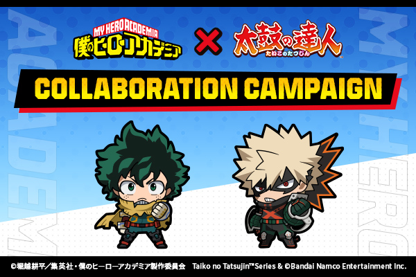
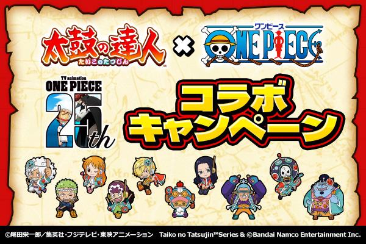

日本語
English
한국어
太鼓の達人ノジイロver.は、
新曲がいっぱい増え、
削除された曲をまた楽しんでいただけます！
太鼓の達人ノジイロverでゆっくりお過ごしください。
中国話
Super Star
晩餐歌
はいよろこんで ／ こっちのけんと
イケナイ太陽
PARTY TIME
スターマイン
PAKU ／ ASMI
タイガースウォール街
Macarena
大好きになればいいんじゃない？ ／ すとぷり
Show Time ／ Knight A – 騎士A –
AMPTAKxCOLORS ／ AMPTAKxCOLORS
ハートビート
テディベア
火燃える
イレブン
おまじない
粛聖!! ロリ神レクイエム☆ / しぐれうい
ダンスホール
栗ようかん
チョコレート
事件の地平線
YES or YES
サレンディング ／ SECOND LIFE
パパパ
Bling-Bang-Bang-Born ／ TVアニメ「マッシュル-MASHLE- 神覚者候補選抜試験編」より
ぐるぐるDJ TURN!! ／ 「D4DJ First Mix」より
心の声 ／ TVアニメ「心の声」より
Always ／ 「ヨーグルティング」より
Fantastic dreamer ／ 「この素晴らしい世界に祝福を！」より
すずめ ／ 「すずめの戸締まり」より
最高到達点 ／ 「ワンピース」より
あめふりのロンド ／ 立秋 feat. ちょこ 「シンクロニカ」より
初 ／ 「学園アイドルマスター」より
BORN ON DREAM! ～HANABI☆NIGHT～ ／ 「アイドルマスター ミリオンライブ！ シアターデイズ」より
Do-Dai ／ 「アイドルマスター」より
MUSIC♪ ／ 「アイドルマスター」より
あんずのうた -ノるあんず2000(DJ過重労働)Remix- ／ Linda AI-CUE 「アイドルマスター シンデレラガールズ」より
Satellites (Feat. AmaLee) /「勝利の女神：NIKKE」より
スペース·ファンタジー
なめこのうた ／ おでんぱ☆スタジオ
蒼鷺之火 ／ BlackY
おもちでマンボ ／ ～小さく切ってよく噛んで～
SAVEGE DELIGHT ／ Yuji Nishijima
調和のインスピレーション
Brand New Days ／ 「リルリルフェアリル」より
FLY HIGH ／ アニメ「ポケットモンスター（2019）」より
爆上戦隊ブンブンジャー
ぜんりょくじょしかくめい！ ／ 「ひみつのアイプリ」より
わんだふるぷりきゅあ！evolution!!
うんぴフレンズ ／ 竹下☆ぱらだいす
おジャ魔女カーニバル！！/「おジャ魔女どれみ」より
ラヴィ ／ すりぃ feat. 鏡音レン
オーバーライド ／ 吉田夜世 Feat. 重音テトSV
えれくとりっく・えんじぇぅ ／ EXIT TUNES PRESENTS Vocalotwinkle feat.鏡音リン & 鏡音レン
ラグトレイン ／ 種葉 feat.歌愛ユキ
45秒 ／ れすぽん feat. 初音ミク & メグッポイド
ハッピーシンセサイザ ／ EasyPop feat. 巡音ルカ・GUMI
ルーキー ／ DECO*27 feat. 初音ミク
ロウワー ／ ぬゆり feat. flower
メズマライザー ／ feat.初音ミク・重音テト
秘密の人形劇 ／ Plum feat.ユニ


MOVIE
PAGE TOP
Custom Patch From BEAT JAM & ©Bandai Namco Entertainment Inc.